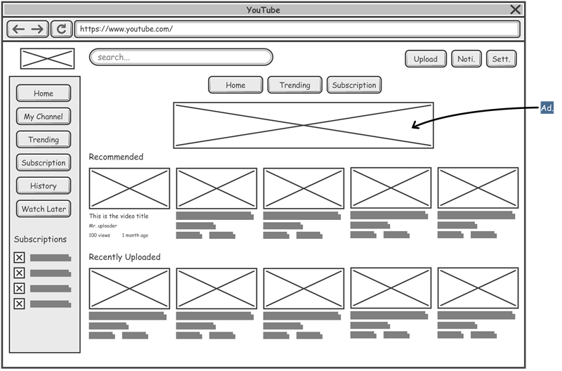
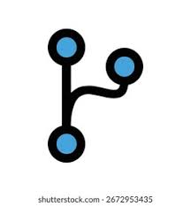

What is a README File?
A README file introduces a project and explains its purpose. It often includes installation instructions, usage information, and other important details for developers and users.
Read MoreLearn about README files, wireframes, and Git branches.
A README file introduces a project and explains its purpose. It often includes installation instructions, usage information, and other important details for developers and users.
Read More
A wireframe is a simple visual guide used to plan the layout of a web page. It helps designers and developers understand the structure of a site before building it.
Read More
A Git branch is an independent line of development. Branches allow developers to work on new features or fixes without affecting the main version of a project.
Read More